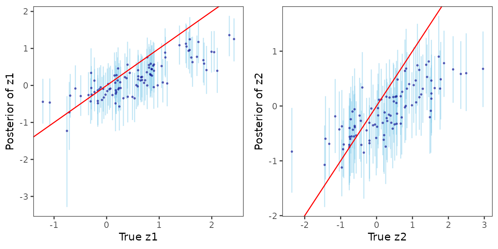

In this article, we discuss the following functions -
These functions can be used to fit non-Gaussian spatial-temporal point-referenced data.
set.seed(1729)Bayesian non-Gaussian spatially-temporally varying coefficient models
We illustrate the spatially-temporally varying coefficient model using the synthetic spatial-temporal Poisson count data.
We first load the data sim_stvcPoisson which consists of
data at 500 spatial-temporal locations. We use the first 100 locations
for the following analysis.
The dataset consists of one covariate x1, response
variable y, spatial locations given by s1 and
s2, a temporal coordinate t_coords, and the
true spatially-temporally varying coefficients z1_true and
z2_true associated with an intercept and x1,
respectively. We elaborate below.
head(dat)## s1 s2 t_coords x1 y z1_true z2_true
## 1 0.8458822 0.43458448 0.51451148 -0.766742372 25 2.0451334 1.28806986
## 2 0.7965761 0.20391526 0.47538393 0.128523505 12 0.3791130 0.06896414
## 3 0.9182483 0.07049103 0.85633367 1.669250054 12 0.3188769 0.58753365
## 4 0.8099342 0.99920483 0.51844637 0.988857940 12 1.8994169 -0.66931170
## 5 0.7379233 0.70276900 0.54693172 1.233493103 28 0.9009137 0.90728556
## 6 0.4131629 0.08673831 0.04680728 0.004780498 5 -0.6926862 -0.61172092Formula for varying coefficients model
We define the spatially-temporally varying coefficients model using a
formula, similar to that in the widely used
lm() function in the stats package. Suppose
refers to a space-time ccoordinate. See “Technical Overview for more
details”. Then, given family = "poisson", the formula
y ~ x1 + (x1) corresponds to the spatial-temporal
generalized linear model
where the y corresponds to the response variable
,
which is regressed on the predictor x1 given by
.
The model variables specified outside the parentheses corresponds to
predictors with fixed effects, and the model inside the parentheses
correspond to variables with spatial-temporal varying coefficient. The
intercept is automatically considered within both the fixed and varying
coefficient components of the model, and hence
y ~ x1 + (x1) is functionally equivalent to
y ~ 1 + x1 + (1 + x1). The spatially-temporally varying
coefficients
is multivariate Gaussian process, and we pursue the following
specifications for
- independent process, independent process with shared parameters, and a
multivariate process. For now, we only support the
cor.fn="gneiting-decay" covariogram. See “Technical
Overview” for more details.
To implement a model, with just a spatial-temporal random effect, one
may specify the formula y ~ x1 + (1) which corresponds to
the model
Using fixed hyperparameters
We use the function stvcGLMexact() to fit
spatially-temporally varying coefficient generalized linear models. In
the following code snippets, we demonstrate the uasge of the argument
process.Type to implement different variations of
spatial-temporal process specifications for the varying
coefficients.
Independent processes
In this case, since there are two independent processes
and
the candidate values of the spatial-temporal process parameters
sptParams is a list with tags phi_s and
phi_t, with each tag being of length 2. Here, the scale
parameter
has dimension 2.
mod1 <- stvcGLMexact(y ~ x1 + (x1), data = dat, family = "poisson",
sp_coords = as.matrix(dat[, c("s1", "s2")]),
time_coords = as.matrix(dat[, "t_coords"]),
cor.fn = "gneiting-decay",
process.type = "independent",
priors = list(nu.beta = 5, nu.z = 5),
sptParams = list(phi_s = c(1, 2), phi_t = c(1, 2)),
verbose = FALSE, n.samples = 500)## Some priors were not supplied. Using defaults.Posterior samples of the scale parameters can be recovered by running
recoverGLMscale() on mod1.
mod1 <- recoverGLMscale(mod1)We visualize the posterior distributions of the scale parameters as follows.
post_scale_df <- data.frame(value = sqrt(c(mod1$samples$z.scale[1, ], mod1$samples$z.scale[2, ])),
group = factor(rep(c("sigma.z1", "sigma.z2"),
each = length(mod1$samples$z.scale[1, ]))))
library(ggplot2)
ggplot(post_scale_df, aes(x = value)) +
geom_density(fill = "lightblue", alpha = 0.6) +
facet_wrap(~ group, scales = "free") + labs(x = "", y = "Density") +
theme_bw() + theme(panel.background = element_blank(),
panel.grid = element_blank(), aspect.ratio = 1)Independent shared processes
In this case, the processes
and
are independent but share a common covariance matrix. Hence,
sptParams is a list with tags phi_s and
phi_t, with each tag being of length 1. Here, the scale
parameter
is 1-dimensional.
mod2 <- stvcGLMexact(y ~ x1 + (x1), data = dat, family = "poisson",
sp_coords = as.matrix(dat[, c("s1", "s2")]),
time_coords = as.matrix(dat[, "t_coords"]),
cor.fn = "gneiting-decay",
process.type = "independent.shared",
priors = list(nu.beta = 5, nu.z = 5),
sptParams = list(phi_s = 1, phi_t = 1),
verbose = FALSE, n.samples = 500)## Some priors were not supplied. Using defaults.Posterior samples of the scale parameters can be recovered by running
recoverGLMscale() on mod2.
mod2 <- recoverGLMscale(mod2)We visualize the posterior distributions of the scale parameters as follows.
post_scale_df <- data.frame(value = sqrt(mod2$samples$z.scale),
group = factor(rep(c("sigma.z"),
each = length(mod2$samples$z.scale))))
ggplot(post_scale_df, aes(x = value)) +
geom_density(fill = "lightblue", alpha = 0.6) +
facet_wrap(~ group, scales = "free") + labs(x = "", y = "Density") +
theme_bw() + theme(panel.background = element_blank(),
panel.grid = element_blank(), aspect.ratio = 1)Multivariate processes
In this case,
is a 2-dimensional Gaussian process with covariance matrix
.
Further, we put an inverse-Wishart prior on
,
which can be specified through the priors argument. If not
supplied, uses the default
,
where
is the dimension of the multivariate process. Here,
sptParams is a list with tags phi_s and
phi_t, with each tag being of length 1, and the scale
parameter
is an
matrix.
mod3 <- stvcGLMexact(y ~ x1 + (x1), data = dat, family = "poisson",
sp_coords = as.matrix(dat[, c("s1", "s2")]),
time_coords = as.matrix(dat[, "t_coords"]),
cor.fn = "gneiting-decay",
process.type = "multivariate",
priors = list(nu.beta = 5, nu.z = 5),
sptParams = list(phi_s = 1, phi_t = 1),
verbose = FALSE, n.samples = 500)## Some priors were not supplied. Using defaults.Posterior samples of the scale parameters can be recovered by running
recoverGLMscale() on mod3.
mod3 <- recoverGLMscale(mod3)We visualize the posterior distribution of the scale matrix as follows.
post_scale_z <- mod3$samples$z.scale
r <- sqrt(dim(post_scale_z)[1])
# Function to get (i,j) index from row number (column-major)
get_indices <- function(k, r) {
j <- ((k - 1) %/% r) + 1
i <- ((k - 1) %% r) + 1
c(i, j)
}
# Generate plots into a matrix
plot_matrix <- matrix(vector("list", r * r), nrow = r, ncol = r)
for (k in 1:(r^2)) {
ij <- get_indices(k, r)
i <- ij[1]
j <- ij[2]
if (i >= j) {
df <- data.frame(value = post_scale_z[k, ])
p <- ggplot(df, aes(x = value)) +
geom_density(fill = "lightblue", alpha = 0.7) +
theme_bw(base_size = 9) +
labs(title = bquote(Sigma[.(i) * .(j)])) +
theme(axis.title = element_blank(), axis.text = element_text(size = 6),
plot.title = element_text(size = 9, hjust = 0.5),
panel.grid = element_blank(), aspect.ratio = 1)
} else {
p <- ggplot() + theme_void()
}
plot_matrix[j, i] <- list(p)
}
library(patchwork)
# Assemble with patchwork
final_plot <- wrap_plots(plot_matrix, nrow = r)
final_plotPosterior distributions of elements of the scale matrix.
Using predictive stacking
For implementing predictive stacking for spatially-temporally varying
models, we offer a helper function candidateModels() to
create a collection of candidate models. The grid of candidate values
can be combined either using a Cartesian product or a simple
element-by-element combination. We demonstrate stacking based on the
multivariate spatial-temporal process model.
Step 1. Create candidate models.
mod.list <- candidateModels(list(
phi_s = list(1, 2, 3),
phi_t = list(1, 2, 4),
boundary = c(0.5, 0.75)), "cartesian")Step 2. Run stvcGLMstack().
mod1 <- stvcGLMstack(y ~ x1 + (x1), data = dat, family = "poisson",
sp_coords = as.matrix(dat[, c("s1", "s2")]),
time_coords = as.matrix(dat[, "t_coords"]),
cor.fn = "gneiting-decay",
process.type = "multivariate",
priors = list(nu.beta = 5, nu.z = 5),
candidate.models = mod.list,
loopd.controls = list(method = "CV", CV.K = 10, nMC = 500),
n.samples = 1000)## Some priors were not supplied. Using defaults.##
## STACKING WEIGHTS:
##
## | phi_s | phi_t | boundary | weight |
## +----------+-------+-------+----------+--------+
## | Model 1 | 1| 1| 0.50| 0.000 |
## | Model 2 | 2| 1| 0.50| 0.000 |
## | Model 3 | 3| 1| 0.50| 0.091 |
## | Model 4 | 1| 2| 0.50| 0.000 |
## | Model 5 | 2| 2| 0.50| 0.000 |
## | Model 6 | 3| 2| 0.50| 0.000 |
## | Model 7 | 1| 4| 0.50| 0.000 |
## | Model 8 | 2| 4| 0.50| 0.000 |
## | Model 9 | 3| 4| 0.50| 0.411 |
## | Model 10 | 1| 1| 0.75| 0.000 |
## | Model 11 | 2| 1| 0.75| 0.000 |
## | Model 12 | 3| 1| 0.75| 0.000 |
## | Model 13 | 1| 2| 0.75| 0.000 |
## | Model 14 | 2| 2| 0.75| 0.000 |
## | Model 15 | 3| 2| 0.75| 0.255 |
## | Model 16 | 1| 4| 0.75| 0.000 |
## | Model 17 | 2| 4| 0.75| 0.213 |
## | Model 18 | 3| 4| 0.75| 0.031 |
## +----------+-------+-------+----------+--------+Step 3. Recover posterior samples of the scale parameters.
mod1 <- recoverGLMscale(mod1)Step 4. Sample from the stacked posterior distribution.
post_samps <- stackedSampler(mod1)Now, we analyze the posterior distribution of the latent process as obtained from the stacked posterior.
post_z <- post_samps$z
post_z1_summ <- t(apply(post_z[1:n_train,], 1,
function(x) quantile(x, c(0.025, 0.5, 0.975))))
post_z2_summ <- t(apply(post_z[n_train + 1:n_train,], 1,
function(x) quantile(x, c(0.025, 0.5, 0.975))))
z1_combn <- data.frame(z = dat$z1_true, zL = post_z1_summ[, 1],
zM = post_z1_summ[, 2], zU = post_z1_summ[, 3])
z2_combn <- data.frame(z = dat$z2_true, zL = post_z2_summ[, 1],
zM = post_z2_summ[, 2], zU = post_z2_summ[, 3])
plot_z1_summ <- ggplot(data = z1_combn, aes(x = z)) +
geom_errorbar(aes(ymin = zL, ymax = zU), alpha = 0.5, color = "skyblue") +
geom_point(aes(y = zM), size = 0.5, color = "darkblue", alpha = 0.5) +
geom_abline(slope = 1, intercept = 0, color = "red", linetype = "solid") +
xlab("True z1") + ylab("Posterior of z1") + theme_bw() +
theme(panel.grid = element_blank(), aspect.ratio = 1)
plot_z2_summ <- ggplot(data = z2_combn, aes(x = z)) +
geom_errorbar(aes(ymin = zL, ymax = zU), alpha = 0.5, color = "skyblue") +
geom_point(aes(y = zM), size = 0.5, color = "darkblue", alpha = 0.5) +
geom_abline(slope = 1, intercept = 0, color = "red", linetype = "solid") +
xlab("True z2") + ylab("Posterior of z2") + theme_bw() +
theme(panel.grid = element_blank(), aspect.ratio = 1)
ggpubr::ggarrange(plot_z1_summ, plot_z2_summ)
Next, we analyze the posterior distribution of the scale matrix that models the inter-process dependence structure.
post_scale_z <- post_samps$z.scale
r <- sqrt(dim(post_scale_z)[1])
# Generate plots into a matrix
plot_matrix <- matrix(vector("list", r * r), nrow = r, ncol = r)
for (k in 1:(r^2)) {
ij <- get_indices(k, r)
i <- ij[1]
j <- ij[2]
if (i >= j) {
df <- data.frame(value = post_scale_z[k, ])
p <- ggplot(df, aes(x = value)) +
geom_density(fill = "lightblue", alpha = 0.7) +
theme_bw(base_size = 9) +
labs(title = bquote(Sigma[.(i) * .(j)])) +
theme(axis.title = element_blank(), axis.text = element_text(size = 6),
plot.title = element_text(size = 9, hjust = 0.5),
panel.grid = element_blank(), aspect.ratio = 1)
} else {
p <- ggplot() + theme_void()
}
plot_matrix[j, i] <- list(p)
}
# Assemble with patchwork
final_plot <- wrap_plots(plot_matrix, nrow = r)
final_plotStacked posterior distribution of the elements of the inter-process covariance matrix.